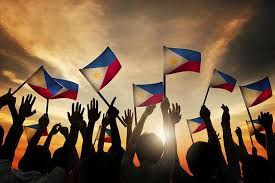

Naging makasaysayan sa mga Pilipino ang pagbabalik ng kanilang kalayaan mula sa kamay ng mga Hapon. At dahil sa kalayaang natamo, higit ring sumigla ang kalayaang pampanitikan ng bansa. Bilang patunay ng kasiglahan ng panitikang Filipino sa
iba’t ibang uri sa panahong ito ay ang pagkakalimbag ng mga sumusunod na katipunan ng mga aklat: Mga Piling Katha at Mga Piling Sanaysay ni Alejandro Abadilla, Maiikling Kwentong Tagalog ni Teodoro Agoncillo, Ako’y Isang Tinig ni Genoveva
Edroza-Matute at marami pang iba. Kinilala rin buhat sa panahong ito ang mga panitikang panlalawigan dahil sa mga inilunsad na mga pambansang pananaliksik at pagsasaling-wika ng panitikan ng Pilipinas.
Pananakop ng Amerikano Dahil sa pagnanais ng mga Pilipino na mapatalsik ang mga Kastila, naging tagapagsagip ang mga Amerikano nang dumating sila noong 1898 na tuluyang nagpabagsak sa pamahalaang Kastila. Kung relihiyon ang naging pamana ng
mga Kastila sa Pilipino, edukasyon naman ang naging pangunahing ipinamana ng mga Amerikano. Sa panahong ding ito isinilang ang mga ilang imortal na makatang Pilipino na nagsisulat sa Ingles at Tagalog. Sa mga unang taon ng pananakop ng
Amerikano sa bansa, sumulat ang mga Pilipino sa Kastila, Tagalog at iba pang wikang panlalawigan. Nagsimula lamang umusbong ang mga panitikan sa Ingles noong 1910 dahil sa mga bagong silang na manunulat. Kabilang sa mga manunulat sa panahong
ito sina Cecilio Apostol na sumulat ng mga oda para kay Rizal; Claro M. Recto na naging tanyag sa kanyang natatanging mga talumpati; si Lope K. Santos na sumulat ng obra-maestrang “Banaag at Sikat” at nagpauso ng panitikang sosyalista;
si Jose Corazon de Jesus na tinaguriang Makata ng Pag-ibig at may panulat-sagisag na ‘Huseng Batute;’ at si Jose dela Cruz na may panulat-sagisag na ‘Huseng Sisiw’ dahil sisiw ang ipinababayad kapag nagpapagawa sa kanya ng tulang pag-ibig;
si Severino Reyes na sumulat ng imortal na dulang “Walang Sugat” at tinaguriang Ama ng Dulang Tagalog; si Zoilo Galang na pinakaunang nobelistang (A Child of Sorrow) Pilipino sa Ingles at maraming-marami pang iba. Ang mga Amerikano ang
nagpakilala ng mga fairy tale sa mga Pilipino na ginamit ng mga gurong Tomasites sa pagtuturo.Ipinakilala rin ng mga ito ang iba pang uri (genre) ng panitikan gaya ng oda at nagpakilala sa pinilakang-tabing – ang pelikula. Pananakop ng
Hapon Sa pambobomba ng Amerika sa Hiroshima, gumanti ang Hapon sa paglusob nito sa Pearl Harbor noong Disyembre 7, 1941. Dahil nasa isalalim ng kolonya ng Estados Unidos kaya’t sinakop ng Hapon ang Pilipinas. Ngunit para sa karamihang
manunulat na Pilipino, isang biyaya sa larangang panitikan ng bansa ang pangyayaring ito. Sumibol nang lubos ang panitikan ng bansa sa panahong ito dahil ipinagbawal ng namumunong Hapon ang paggamit ng wikang Ingles at itinaguyod ang pagpapayaman
sa panitikan gamit ang mga katutubong wika sa bansa. Sinunog din ang mga aklat na nasusulat sa Ingles upang masigurong hindi mababahiran ng kanluraning ideya ang panitikang nililikha. Ang panahong ito sa kasaysayan ng bansa at ng panitikan
ang tinaguriang Gintong Panahon ng Panitikang Filipino dahil higit na malaya ang mga Pilipino (kaysa noong sa Amerikano) sa pagsulat ng panitikan at pagsanib ng kultura, kaugalian at paniniwalang Pilipino sa mga ito. Sa panahon ding ito
kinilala ang mga manunulat na babaeng Pilipino sa pangalan nina Liwayway A. Arceo at Genoveva Edroza-Matute dahil sa mga makintal na maka-feministang maikling-kwento. Dahil sa dinalang haiku (maikling tulang may tatlong taludtod at may
bilang na pantig na 5-7-5 sa taludtod), nagkaroon ang mga Pilipino ng tanaga(maikling tulang may apat na taludtod at ang bilang ng pantig ay 7-7-7-7) Panahon ng Pagkamit ng Kalayaan hanggang Kasalukuyan Naging makasaysayan sa mga Pilipino
ang pagbabalik ng kanilang kalayaan mula sa kamay ng mga Hapon. At dahil sa kalayaang natamo, higit ring sumigla ang kalayaang pampanitikan ng bansa. Bilang patunay ng kasiglahan ng panitikang Filipino sa iba’t ibang uri sa panahong ito
ay ang pagkakalimbag ng mga sumusunod na katipunan ng mga aklat: Mga Piling Katha at Mga Piling Sanaysay ni Alejandro Abadilla, Maiikling Kwentong Tagalog ni Teodoro Agoncillo, Ako’y Isang Tinig ni Genoveva Edroza-Matute at marami pang
iba. Kinilala rin buhat sa panahong ito ang mga panitikang panlalawigan dahil sa mga inilunsad na mga pambansang pananaliksik at pagsasaling-wika ng panitikan ng Pilipinas. Lalo pang sumigla ang panitikang Filipino nang ilunsad ang gawad
Carlos Palanca Memorial Awards for Litetature. Sumilang din sa panahong ito ang aktibismo ng mga batang mag-aaral noong nagsisimula ang dekada ’80 at ang kanilang panitikang aktibista gaya nina Virgilio Almario (na may sulat-panulat na
Rio Alma) at Quintin Perez. > Abigail Lazaro: Sa kasalukuyan, sinasalin ang mga panitikan hindi lamang sa mga pahayagan, magazine at aklat, hindi lamang sa anyo ng pelikula, palabas pantelebisyon o kaya’y programang panradyo; kundi sa
pamamagitan din ng hi-technology – ang Internet. Dahil sa internet nagkaroon ng blogging, video clipping at audio airing na patuloy na bumubuhay sa panitikan hindi lang ng Filipino kundi ng ibang lahi mandin. Patuloy na dumarami ang mga
manunulat na Pilipino sa iba’t ibang anyo at uri ng panitikan gamit ang iba’t ibang media dahil sa mga inumpisahang kurso sa mga universidad at kolehiyo at pangangasiwa ng gobyerno ng mga pagsasanay sa mga kinakikitaang husay na mga mamamayan.
Ngunit ang kasiglahan ng panitikan ay hindi magiging buo kung aasahan lamang ang pagdami at pag-usbong ng mga manunulat; kailangan din ang pagpapahalaga at pagmamalasakit ng mga mambabasa na katuwang sa pagtaguyod ng panitikan ng lahi.
Reference: http://kadipanvalsci.blogspot.com/2010/08/panitikang-filipino-sa-ibat-ibang.html